5 Approximating with a Distribution
5.1 Normal Distributions
Density Curves
Example 5.1
Bootstrap <- do(1000) * mean( ~ Time, data = resample(CommuteAtlanta))
head(Bootstrap, 3)## mean
## 1 28.364
## 2 28.894
## 3 28.404gf_dhistogram( ~ mean, data = Bootstrap)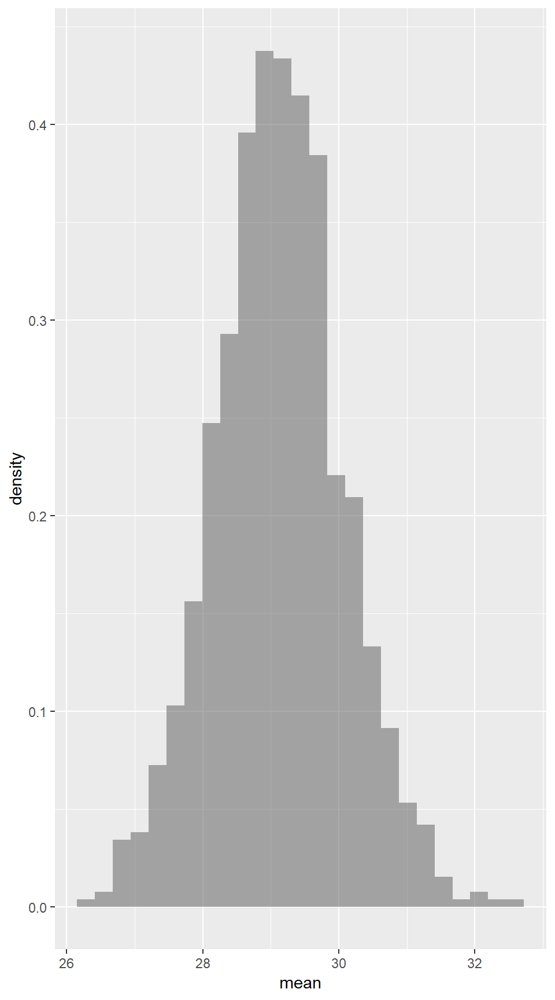
gf_dens( ~ mean, data = Bootstrap)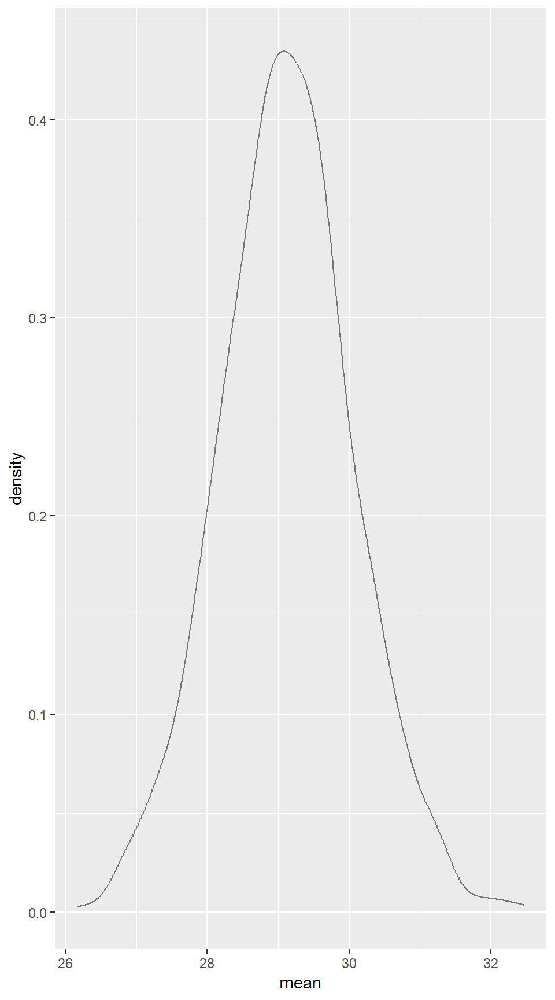
prop( ~ (mean <= 30), data = Bootstrap) # proportion less than 30 min## prop_TRUE
## 0.842prop( ~ (mean >= 31), data = Bootstrap) # proportion greater than 31 min## prop_TRUE
## 0.017prop( ~ (mean >= 30 & mean <= 31), data = Bootstrap) # proportion between 30 and 31 min## prop_TRUE
## 0.142Normal Distributions
Normal distributions
- are symmetric, unimodel, and bell-shaped
- can have any combination of mean and standard deviation (as long as the standard deviation is positive)
- satisfy the 68–95–99.7 rule:
Approximately 68% of any normal distribution lies within 1 standard deviation of the mean.
Approximately 95% of any normal distribution lies within 2 standard deviations of the mean.
Approximately 99.7% of any normal distribution lies within 3 standard deviations of the mean.
Many naturally occurring distributions are approximately normally distributed. Normal distributions are also an important part of statistical inference.
The gf_dist() function can be used to plot many common distributions.
Figure 5.5
gf_dist("norm", mean = 0, sd = 1, xlim = c(-5, 6)) %>%
gf_dist("norm", mean = 2, sd = 1, colour = "red")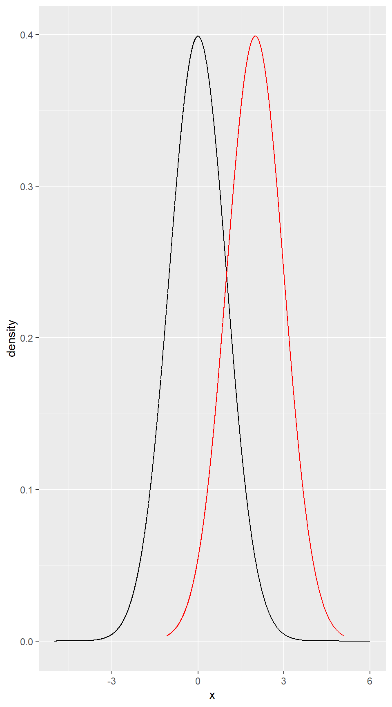
gf_dist("norm", mean = 0, sd = 1, xlim = c(-5, 5)) %>%
gf_dist("norm", mean = 0, sd = 2, colour = "red") %>%
gf_dist("norm", mean = 0, sd = 3, colour = "green")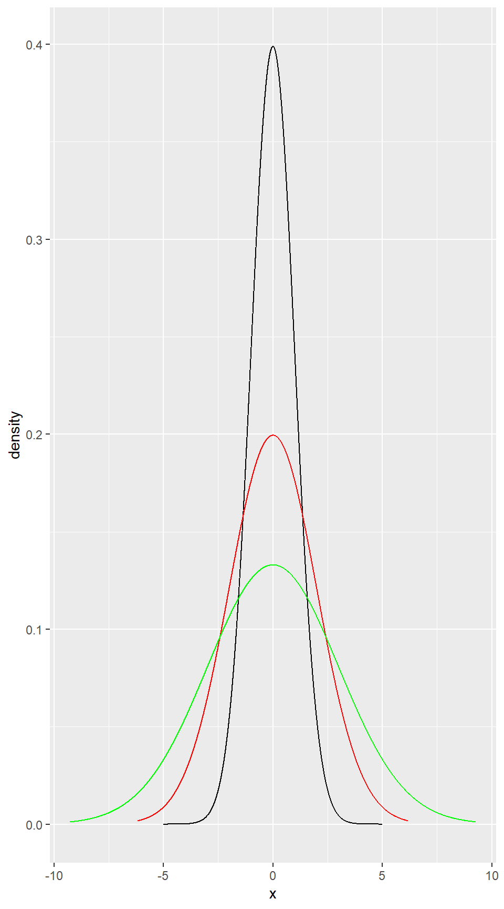
Example 5.2
gf_dist("norm", mean = 75, sd = 10, xlim = c(40, 110))
gf_dist("norm", mean = 7.1, sd = 1.1, xlim = c(2.7, 11.5))
gf_dist("norm", mean = 0, sd = 0.02, xlim = c(-.07, .07))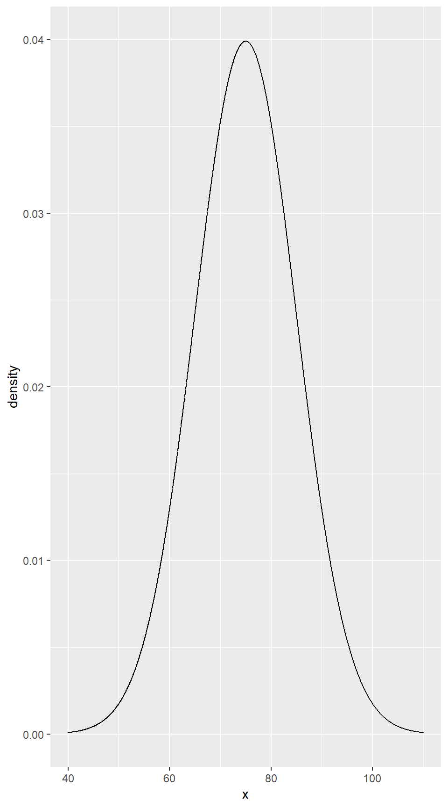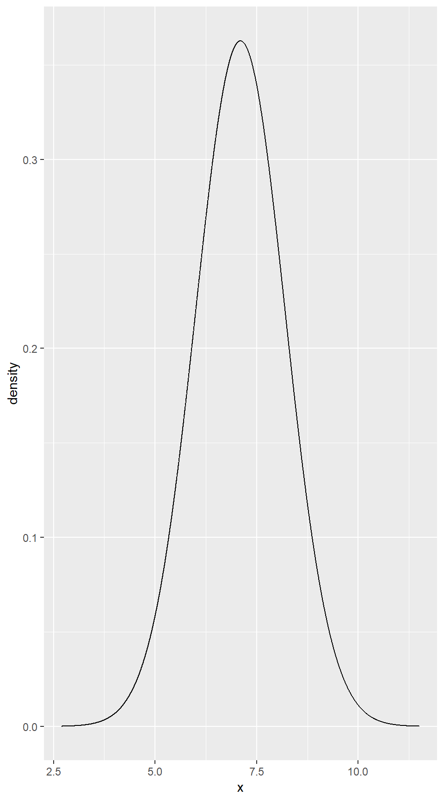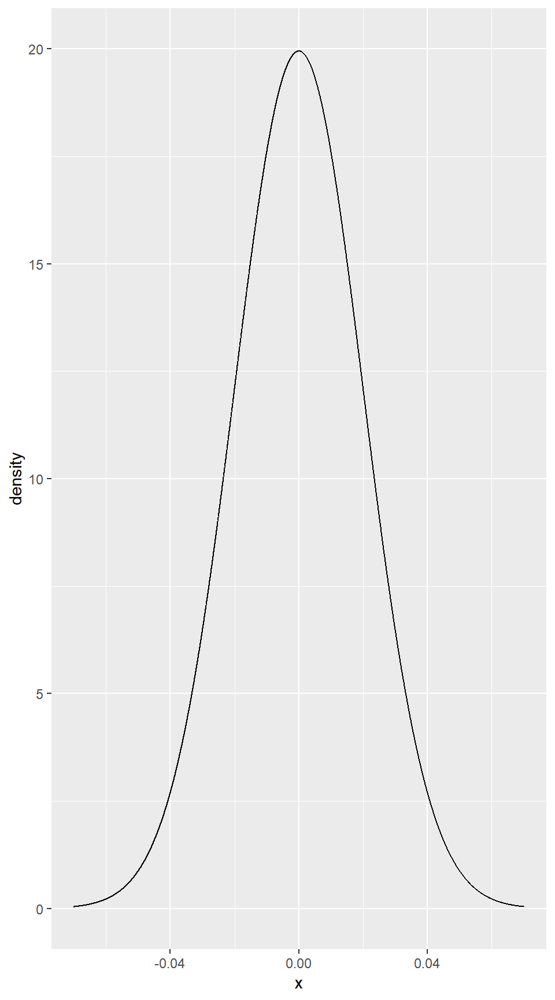
Finding Normal Probabilities and Percentiles
The two main functions we need for working with normal distributions are pnorm() and qnorm().
pnorm() computes the proportion of a normal distribution below a specified value:
\[ \mbox{\texttt{pnorm(x, mean = $\mu$, sd = $\sigma$)}} = \Prob(X \le x) \] when \(X \sim \Norm(\mu, \sigma)\).
We can obtain arbitrary probabilities using pnorm()
Example 5.3
pnorm(90, 75, 10, lower.tail = FALSE) # proportion of scores above 90## [1] 0.0668072xpnorm(90, 75, 10, lower.tail = FALSE)## ## If X ~ N(75, 10), then## P(X <= 90) = P(Z <= 1.5) = 0.9332## P(X > 90) = P(Z > 1.5) = 0.06681## 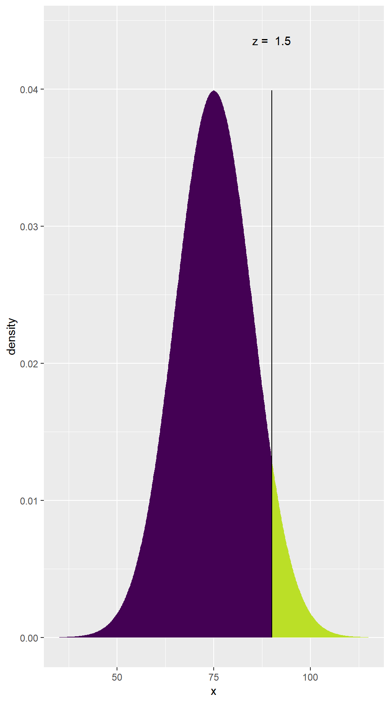
## [1] 0.0668072The xpnorm() function gives a bit more verbose output and also gives you a picture. Notice the lower.tail = FALSE. This is added because the default for pnorm() and xpnorm() finds the lower tail, not the upper tail. However, we can also subtract the proportion of the lower tail from 1 to find the the proportion of the upper tail.
Example 5.4
qnorm() goes the other direction: You provide the quantile (percentile expressed as a decimal) and R gives you the value.
qnorm(0.2, 75, 10) # 20th percentile in Norm(75, 10)## [1] 66.58379xqnorm(0.2, 75, 10) ## ## If X ~ N(75, 10), then## P(X <= 66.58379) = 0.2## P(X > 66.58379) = 0.8## 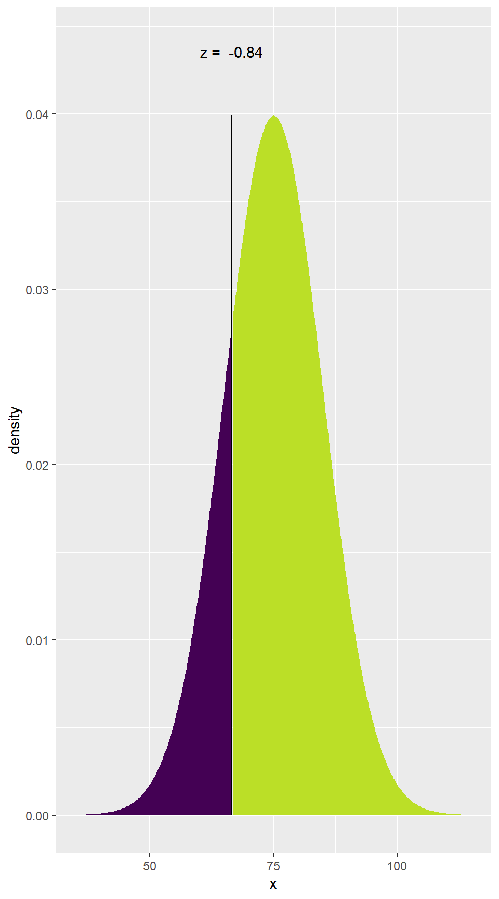
## [1] 66.58379Standard Normal N(0,1)
Because probabilities in a normal distribution depend only on the number of standard deviations above and below the mean, it is useful to define \(Z\)-scores (also called standardized scores) as follows:
\[ \mbox{$Z$-score} = \frac{ \mbox{value} - \mbox{mean} } { \mbox{standard deviation} } \]
If we know the population mean and standard deviation, we can plug those in. When we do not, we will use the mean and standard deviation of a random sample as an estimate.
Z-scores provide a second way to compute normal probabilities.
Example 5.5
z30 <- (30 - 29.11) / 0.93; z30 # z-score for 30 min## [1] 0.9569892z31 <- (31 - 29.11) / 0.93; z31 # z-score for 31 min## [1] 2.032258xpnorm(c(30, 31), 29.11, 0.93) # original normal distribution proportion between 30 and 31 min## ## If X ~ N(29.11, 0.93), then## P(X <= 30) = P(Z <= 0.957) = 0.8307 P(X <= 31) = P(Z <= 2.032) = 0.9789## P(X > 30) = P(Z > 0.957) = 0.16929 P(X > 31) = P(Z > 2.032) = 0.02106## ## [1] 0.8307137 0.9789362xpnorm(c(z30, z31)) # standardized distribution proportion between 30 and 31 min## ## If X ~ N(0, 1), then## P(X <= 0.957) = P(Z <= 0.957) = 0.8307 P(X <= 2.032) = P(Z <= 2.032) = 0.9789## P(X > 0.957) = P(Z > 0.957) = 0.16929 P(X > 2.032) = P(Z > 2.032) = 0.02106## 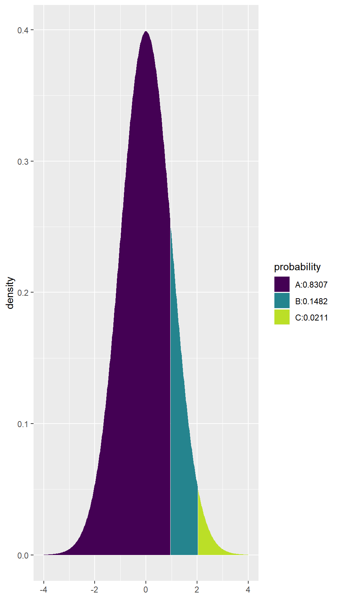
## [1] 0.8307137 0.9789362pnorm(z31) - pnorm(z30)## [1] 0.1482226xpnorm(0.957) # proportion with z-score below 0.957## ## If X ~ N(0, 1), then## P(X <= 0.957) = P(Z <= 0.957) = 0.8307## P(X > 0.957) = P(Z > 0.957) = 0.1693## 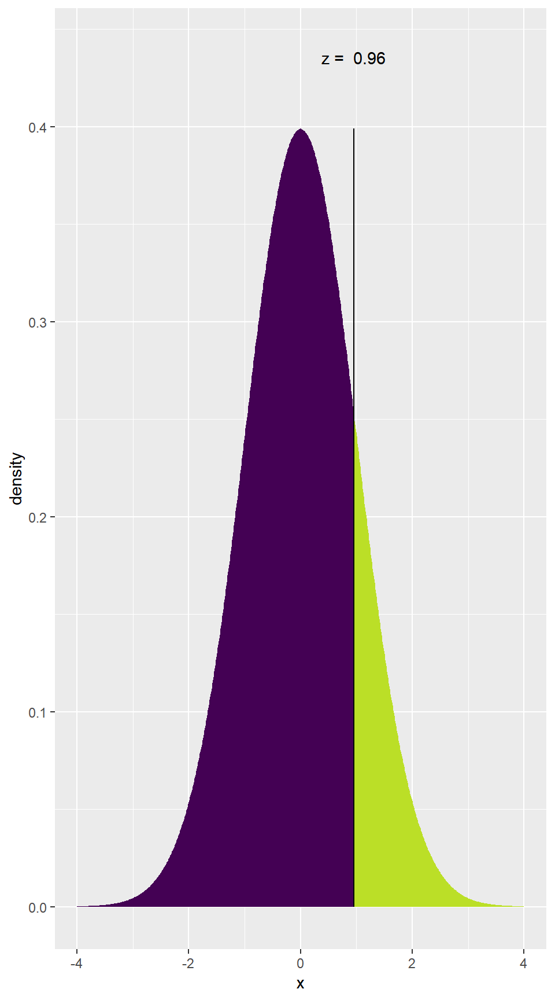
## [1] 0.8307164xpnorm(2.032, lower.tail = FALSE) # proportion with z-score above 2.032## ## If X ~ N(0, 1), then## P(X <= 2.032) = P(Z <= 2.032) = 0.9789## P(X > 2.032) = P(Z > 2.032) = 0.02108## 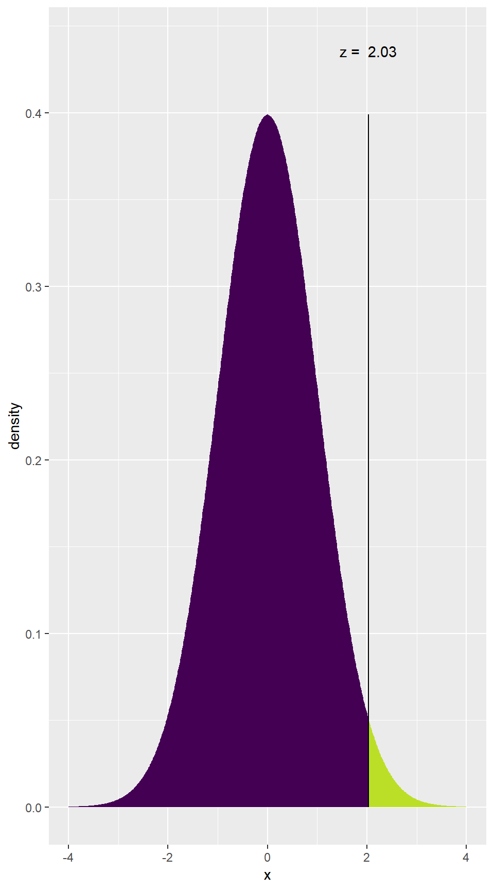
## [1] 0.02107683pnorm(30, 29.11, 0.93) ## [1] 0.8307137pnorm(31, 29.11, 0.93, lower.tail = FALSE)## [1] 0.02106377Example 5.6
z <- qnorm(0.2); z## [1] -0.841621275 + z * 10## [1] 66.583795.2 Confidence Intervals and P-values Using Normal Distributions
Confidence Intervals Based on a Normal Distribution
Example 5.7
Bootstrap <- do(1000) * mean( ~ Time, data = resample(CommuteAtlanta))
gf_dotplot( ~ mean, binwidth = 0.1, dotsize = .6, data = Bootstrap)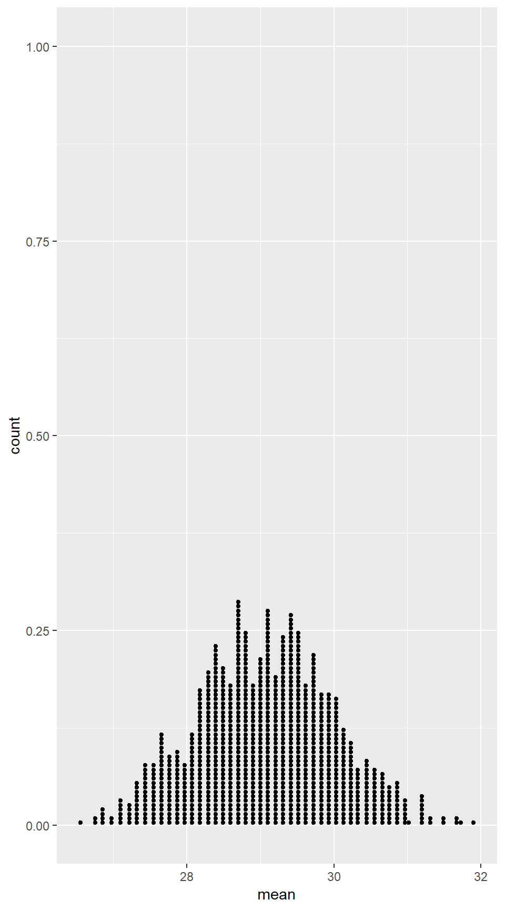
xqnorm(c(0.025, 0.975), 29.11, 0.915) # 95<!-- confidence interval for the normal distribution -->## ## If X ~ N(29.11, 0.915), then## P(X <= 27.31663) = 0.025 P(X <= 30.90337) = 0.975## P(X > 27.31663) = 0.975 P(X > 30.90337) = 0.025## 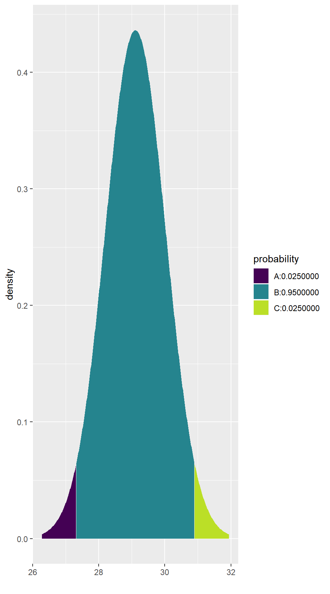
## [1] 27.31663 30.90337qnorm(0.005, 29.11, 0.915) # lower endpoint for 99<!-- confidence interval -->## [1] 26.75312qnorm(0.995, 29.11, 0.915) # upper endpoint for 99<!-- confidence interval -->## [1] 31.46688qnorm(0.05, 29.11, 0.915) # lower endpoint for 90<!-- confidence interval -->## [1] 27.60496qnorm(0.95, 29.11, 0.915) # upper endpoint for 90<!-- confidence interval -->## [1] 30.61504Example 5.8
qnorm(0.005, 13.10, 0.20) # lower endpoint for 99<!-- confidence interval -->## [1] 12.58483qnorm(0.995, 13.10, 0.20) # upper endpoint for 99<!-- confidence interval -->## [1] 13.61517P-values Based on a Normal Distribution
Example 5.9
Randomization.Temp <- do(10000) * (mean( ~ BodyTemp, data = resample(BodyTemp50)) + 0.34)
gf_dhistogram( ~ result, binwidth = .025, data = Randomization.Temp) %>%
gf_fitdistr()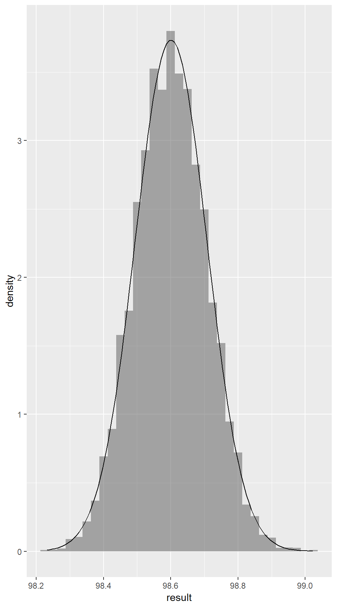
pnorm(98.26, 98.6, 0.1066)## [1] 0.00071261192 * pnorm(98.26, 98.6, 0.1066)## [1] 0.001425224z <- (98.26 - 98.6) / 0.1066; z## [1] -3.189493pnorm(z)## [1] 0.00071261192 * pnorm(z)## [1] 0.001425224Example 5.10
pnorm(0.66, 0.65, 0.013, lower.tail = FALSE)## [1] 0.2208782gf_fitdistr()has default arguments that will add a normal distribution, these defaults can be changed↩